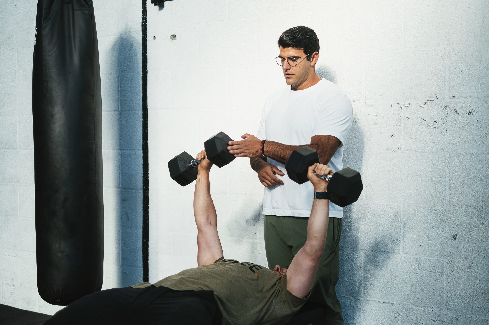
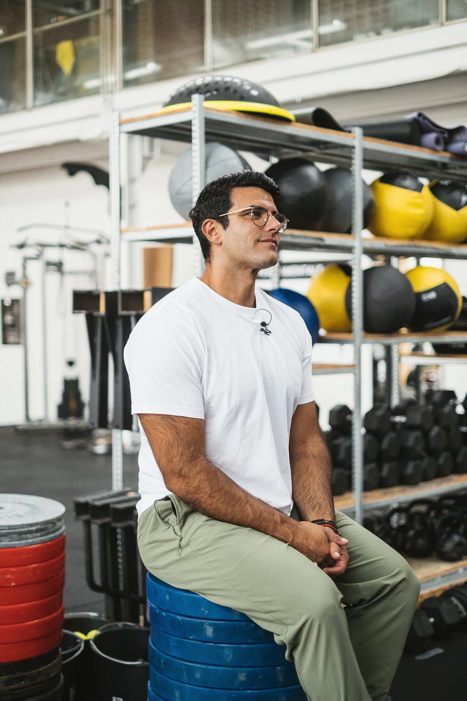

The day hasn’t started yet and your back is already negotiating. You move carefully. You check in with it before you check in with anything else.
Richard Aceves presents
Fixing Back Pain For Good
Why your back pain keeps coming back — and how to fix the root cause.
Your back pain is probably not happening for the reason you’ve been told.
Most programs sell you six weeks of sets, reps, and positions to hit. That is not the same as teaching your body the tension it actually needs. If stretching, PT, chiropractic, injections, or rest still leave you in the same loop, there is usually a deeper pattern underneath it.
Root-cause approach
Safety-first system
100% money-back guarantee
 Your guide through the work
Your guide through the work
If this sounds familiar
You already know something is off.
You don’t need another lecture about stretching. You need someone who can name what you’ve been living with — and explain why it never quite leaves.
Desk. Car. Plane. The same flare, the same hunt for a position that doesn’t hurt. Position was never the whole problem.
You used to load, bend, and move without a second thought. Now every lift comes with a calculation: is this going to set me back?
PT. Chiropractic. Injections. Rest. Generic exercise plans. Relief shows up. Then it leaves. The cycle is exhausting.
That’s the part nobody talks about. The pain is one thing. The fear of your own movement is another.
The problem is not that your body is broken. The problem is that nobody has shown you the pattern behind your pain.
Why typical solutions fail
Most people get treated where they feel pain. Not where the pattern starts.
That is why the relief is temporary. If the bigger muscles are not doing the work, the smaller ones start screaming. Your back is often the messenger, not the whole story.
Symptom-chasing
Where most people get stuck
- Treat the sore spot and hope it holds
- Stretch or smash what’s tight — especially the hip flexors
- Six-week plans built on sets, reps, and positions
- More skill, more exercises, same pattern
- Adjust, inject, rest — then repeat
Root-cause work
Where this work actually starts
- Find which structural muscles stopped firing
- Tension over position — what the body is doing, not just how it looks
- Use breath to know if a range actually feels safe
- Build connection first, then intensity, then skill
- Stay in a phase as long as you need. No countdown.
When the glutes, hamstrings, or psoas cannot hold tension, the body sends the job to smaller, more reactive muscles around the spine and hip. You feel that as pain. Stretching the tight spot does not restore the muscle that shut off.
The exercise is not what changes this. You are. The work is how you use tension, breath, and attention — not another list of “good for your back” movements.

The person behind the system
I didn’t come to this work from a textbook.
At 18, a rockslide hit me at 5,000 meters. My hip crushed into more than 35 pieces. I spent five months bedridden, relearned how to walk, and went through six surgeries — including a double ulnar replacement. The medical prognosis was simple: live with the pain, stay sedentary, deal with it.
I chose a different route. I taught myself to walk again. I rebuilt through strength, breath, and the slow work of trusting my body. Four months later I was deadlifting 200 kilograms.
The pain still came back later. Because I was still chasing symptoms — stretching what was tight, treating what hurt, missing the pattern. That’s when it clicked.
Symptoms are usually signals of displaced tension, not the true root cause. The body doesn’t lie. You just have to know how to read it.
I’m a movement coach and nervous-system educator. I’ve spent years in this work, thousands of assessments, seminars in 30 countries. The method is the same every time: meet people where they are. Build safety first, then confidence, then consistency.
Lived experience
Rebuilt himself after catastrophic injury — then spent years learning why the pain still returned.
Hands-on coaching
Pattern recognition from thousands of live assessments, not a script.
Start where you are
If you’re hurting today, you don’t need to be “ready.” Phase 1 starts with connection, not a test.
The 3-phase system
Safety first. Then confidence. Then freedom.
This is not a six-week countdown. You stay in each phase as long as you need. The goal is not to keep you dependent on a program. It is to give you tools you can keep using when life gets loud again.
Reclaiming Safety
Phase 1 is about connection. You learn to engage the bigger structural muscles — glutes, hamstrings, psoas, deep core — so the smaller, reactive ones around the spine can stop doing a job they were never meant to do. Breath tells you if a range is actually safe. If you can inhale through the movement, the body is still with you. If you hold your breath, tension is already leaving.
- Reconnect the muscles that should be doing the work
- Use breath as a test of safety, not a cue card
- Daily work you can start without a gym
Restoring Confidence
Once those muscles can fire, we add intensity without dumping the load into your spine. Less skill. Less slow grinding. More honest work — carries, sleds, faster efforts — so the back learns it does not have to take over. This is how confidence gets built: not by adding another clever exercise, but by proving the right muscles can take stress.
- Push intensity with the least extra skill
- Build quality in the muscles that keep you safe
- Teach the back it does not have to freak out
Sustaining Freedom
Phase 3 is not a finish line. The body likes old patterns. Flares can still show up. The work here is catching them earlier, keeping Phase 1 as maintenance, and going back to sport, training, and daily life without starting from zero every time. Nothing about this is linear. The point is to shrink the amplitude of the mistake.
- Keep the daily practices that created safety
- Return to skill and life with better listening
- Use a flare as information, not a verdict
This is not a magical program. It is a set of tools. You stay in a phase as long as you need — based on how safe you feel, how much work you are putting in, and what your body is telling you today.
What makes this different
This is not generic rehab with better lighting.
Root-cause, not symptom-chasing
We look for the structural muscles that stopped firing — not another way to quiet the sore spot for a week.
Tension over position
A position can look fine and still be wrong. The question is whether the right muscles are holding the work, or whether the back is picking up the slack.
The exercise is a tool. You do the work.
Another clever movement will not save you. Presence, tension, and breath inside the movement will. That is the part most programs skip.
Not a six-week script
You stay in a phase as long as you need. Some bodies move faster. Some need more time. The course is built for that, not for a calendar.
Lived experience and years of hands-on coaching
This was built from Richard’s own recovery and thousands of assessments. It is not theory dressed up as a course.
Tools for the long haul, not a temporary fix
Phase 1 stays with you. When a flare tries to come back — and it might — you have a way to catch it and come back to center.
Social proof
What changes when the pattern is found.
Real people. Real bodies. The language is theirs. If a quote is still being confirmed for this page, it is marked clearly so it can be swapped in.
“Two years ago we arrived in Amsterdam, met with Richard and he got me out of pain during our first session. That forever changed my life. It was incredible and we cancelled my surgery that week. I train with intention now. I move better and I’m no longer in pain.”
“That session helped so much. Who knew that going heavier would relieve the hip pain? Also, I felt so calm afterward; it was like stress left the body with each rep. It has been the best night’s sleep in months, and there is no hip or back tightness in the morning!”
Mini case study
The pain was not random. The body was protecting something.
Before
Years of hip pain. Multiple surgeons. A replacement already on the calendar. Movement felt like it was disappearing.
What Richard saw
The joint was not the whole story. The bracing pattern around it was doing most of the damage.
After
Out of pain in the first session. Surgery cancelled that week. Training continued with intention — not fear.
“Okkkk had the best sesh today! Did sled drags, sprints and pushes. Belt squat/marches, calf raises — that was intense. Zero hip pain! The guy who owns the gym came up and said hi, and the first thing he said to me was that I was moving way better.”
Video testimonial slot — drop in Nikki’s clip or a new member story here when ready.
What you get
A structured path. Not another pile of exercises.
This is Richard’s system, applied to one problem: chronic and recurring back pain. You get the same sequence he teaches in the course — connection first, then intensity, then consistency — and the daily practices that make it usable.
A way to read the pattern
Simple anatomy, in Richard’s language: which bigger muscles should be working, why the smaller ones start screaming, and how displaced tension shows up as hip, low-back, or mid-back discomfort.
Phase 1 work you can start now
Walking, connection work, and SWAMI breath-and-tension practice. No gym required. The point is to feel the right muscles fire, not to collect more exercises.
A 3-phase progression
Safety, then confidence, then consistency. You do not skip the part your nervous system is still asking for. You do not jump to skill before the structure can take it.
Short-term
Daily practices that start rebuilding connection — and a way to know, through breath, whether a movement is still safe today.
Medium-term
Intensity without dumping load into the spine. Carries, sled work, and faster efforts once the right muscles can take the stress.
Long-term
Phase 1 as maintenance. Tools for catching a flare earlier. A way back to sport, training, and daily life that does not depend on a six-week plan.


Questions people actually ask
Let’s talk through the objections.
Then we start there. Phase 1 is connection work, not a test of how much you can tolerate. A lot of it can be done walking, standing, or lying down. You do not have to push through pain to begin. Breath tells you when to stay and when to back off.
Most people who come here already have. Stretching the tight hip flexor, adjusting the joint, needling the sore spot — that often treats the messenger. This work looks for the structural muscles that stopped firing, and why the nervous system sent the job somewhere else. You can keep working with your clinician. This is usually the missing layer.
No. If it were, stretching and generic rehab would have already solved it. Richard’s line in the course is simple: the exercise is not what changes this. You are. You learn how to create the right tension, how to use breath as a signal, and how to progress without jumping to skill too early.
Then your system is still protecting you. That is information. We do not start by adding skill or grinding slow tempos into a spine that is already on guard. We start by reconnecting the muscles that should be doing the work. If you have to hold your breath to complete a movement, tension is already leaving. That is the cue to change the input — not a reason to quit your body.
This is not a six-week countdown. Richard does not tell you what to do for the next calendar block. You stay in each phase as long as you need — based on how safe you feel and how much work you are putting in. Some people feel a shift as they reconnect. The body still likes old patterns. The point is tools you can keep using, not a finish date.
That fear makes sense. After enough flare-ups, the body predicts the next one. Phase 1 is how we change that prediction — by proving the right muscles can work in a range that still feels safe. Load and intensity come back in Phase 2, with less skill piled on top, so the spine is not asked to hold what the glutes and hamstrings should be holding.

A way forward
Your body is not broken. Your pain is not random.
You are not crazy. You are not weak. And this is not something you just have to live with.
There is a pattern underneath the flare-ups. There is a way to understand it. And there is a structured path — safety, then confidence, then consistency — with a guide who had to find that path in his own body first.
Richard is that guide. The next step is an assessment, not a guess.
100% money-back guarantee
If this is not the right fit, you are not stuck with it.
The guarantee applies across Fixing Back Pain For Good offers. I would rather you leave than stay in a system that does not serve you.
Apply to join
Book your assessment.
Tell me what you’ve been dealing with and what you’ve already tried. Keep it short. I will use this to see whether this system is the right next step — not to sell you a generic plan.
This is a sub-brand of Richard Aceves, not a faceless program. You are asking to work inside his method.
Got it.
Your email app should open with the details filled in. If it doesn’t, send the same note to info@richardaceves.com and I’ll take it from there.